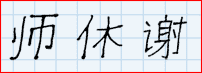

Учим систему МАО. Советы
Чтобы эффективно пользоваться системой МАО ее нужно очень хорошо знать. Это как алфавит. Это основа и фундамент для дальнейшей работы. Именно благодаря ей, вы сможете выучить китайский намного быстрей и качественней. Поэтому очень важно не спешить, и заучить систему качественно и надолго.Начнем учить ключики.
Для лучшего запоминания вам нужно задействовать идеомоторные навыки. То есть, каждый ключик мы должны свободно узнавать и уметь писать. Для развития письменных навыков вам потребуется тетрадка в клеточку и ручка, лучше использовать гелевую или перьевую ручку. Написанные ей иероглифы выглядят красиво и стильно.
Вы должны умещать один радикал или иероглиф в четыре клеточки. Это позволит вам выработать правильное написание иероглифов в дальнейшем.

Немного о способах написания иероглифов.
Есть специальные правила каллиграфии. Это целое искусство.
Вы рисуете иероглиф в строго определенной последовательности. И никак иначе.
А то нарушится энергетическая структура знака… Это я заврался…:) Да, конечно правила существуют. Но мы на них начихаем. Писать нужно, так как именно вам удобно (ой и проклянут меня за такие советы синологи и китаисты :). На вершины каллиграфического искусства мы не лезем. Нам нужны иероглифы, чтобы применять их практически. Да и в наш информационный век вы будете чаще их печатать на компьютере, чем писать вручную. Но развитие навыков написания иероглифов необходимы. Так как это задействует как зрительную, так и мышечную память. Что позволяет запоминать нам китайские иероглифы качественнее и быстрее.
На качественное заучивание всей системы у вас уйдет от 2 до 4 недель. Но это необходимо. Это время пойдет на действительно полезное дело. Вам нужно запоминать от 10 до 20 ключиков в день. Кроме запоминания вам необходимо их все уметь писать. Это немного.
В дальнейшем мы увеличим темп заучивания. Но поначалу для запоминания незнакомых и чуждых нам элементов такой график вполне подходит.
Так как система основана на визуальной информации. Вы освоите ее быстро. Уже через 3-4 просмотра всей системы вы сможете узнавать большую часть ключей. А вот запомнить, как они пишутся - для этого потребуется ваше усердие и труд.
Схема повторения следующая.
- Каждый день вы просматриваете всю систему. Пытаетесь связать картинку и ключ - радикал.
- Затем, просматривая ключи, вспоминаете, какие картинки им соответствуют.
- Следующее – письменные навыки. Выбираете первые 10-20 ключей радикалов. И начинаете писать каждый из них по отдельности не менее 20-30 раз. После, смотря только на картинки, вспоминаете и пишите выученные ключики - радикалы
- Полезное упражнение, это просмотр китайских текстов. Рассматривая иероглифы, старайтесь определить в них радикалы и вспомнить соответствующие им картинки. Прогресс вы почувствуете уже через неделю.
- Повторять вновь выученные иероглифы нужно на следующий день, затем через день, 4 дня и неделю. Так ваш мозг будет усваивать новую информацию качественнее и с меньшими затратами.